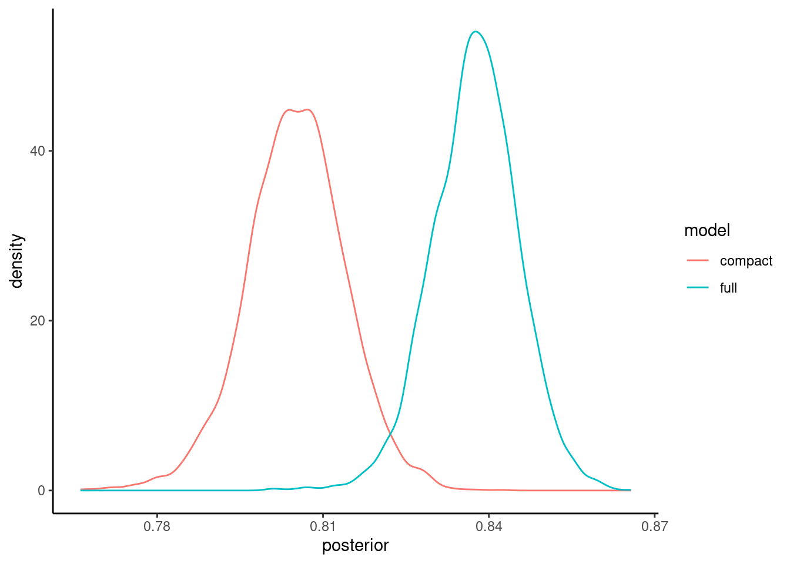
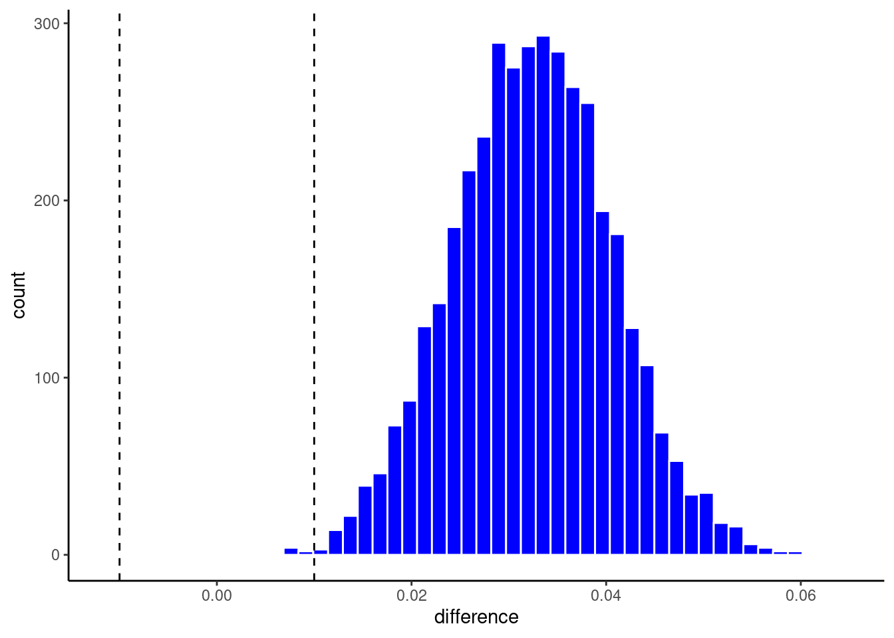
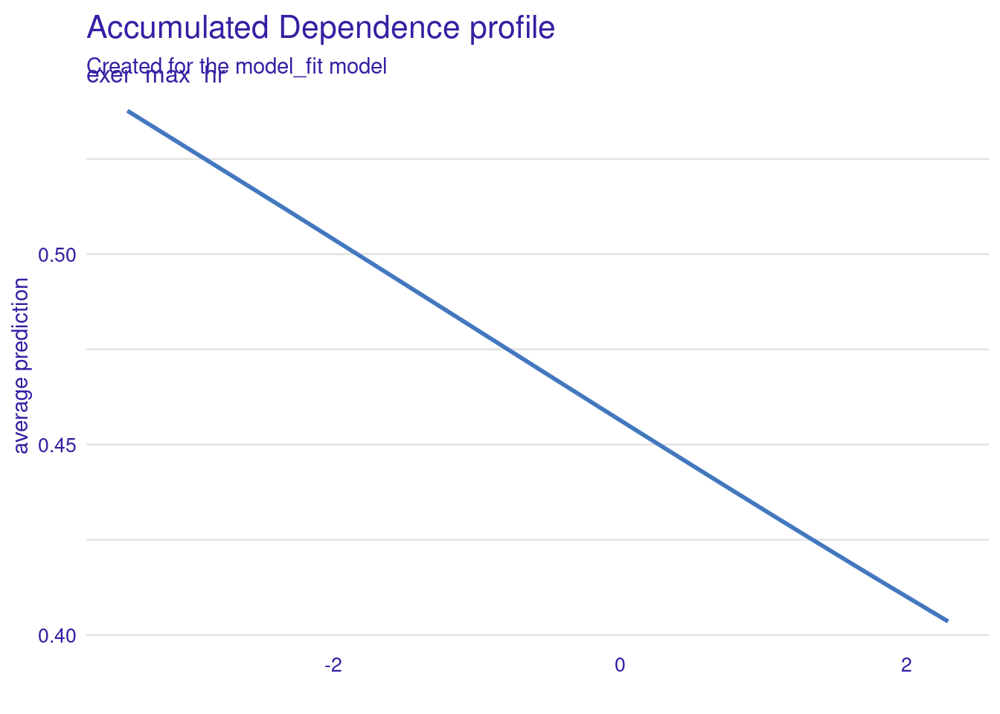

Use of feature ablation to statisticall compare model configurations
Frequentist correlated t-test using CV
Bayesian estimation for model comparisons
ROPE
Feature importance metrics for explanation
Model specific vs. model agnostic approaches
Permutation feature importance
Shapley values (SHAP)
local importance
global importance
Visual approaches for explanation
Partial Dependence plots
Accumulated Local Effects (ALE) plots
11.2 Model Comparisons & Feature Ablation
In 610/710, you learned to think about the tests of specific parameter estimates as model comparisons of models that did vs. did not include the specific feature(s) in the model
Model comparisons can be used in a similar way for explanatory goals with machine learning
This can be done for a single feature (e.g., \(x_3\))
The comparison of these two models is equivalent to the test of \(H_0: b_3 = 0\)
This can also involve sets of features if you hypothesis involves the effect of a set of features
All features that represent a categorical predictor
Set of features that represent some broad construct (e.g., psychiatric illness represented by symptoms counts for all of the major psychiatric diagnoses)
This technique of comparing two nested models (i.e. feature set for the compact model is a subset of the feature set for the full/augmented model) is often called feature ablation in the machine learning world
Model comparisons can also be done between model configurations that differ by characteristics other than their features (e.g., statistical algorithm)
Model comparisons can be useful to determine the best available model configuration to use for a prediction goal
In some instances, it is OK to simply choose the descriptively better performing model configuration (e.g., better validation set or resampled performance estimate)
However, if the descriptively better performing model has other disadvantages (e.g., more costly to implement) you might want to only use it if you had rigorously demonstrated that it likely better for all new data.
In this unit, we will learn two approaches to statistically compare models
Traditional frequentist (NHST) approach using a variant of the t-test to accommodate correlated observations
A Bayesian alternative to the t-test
We will compare model nested model configurations formed by feature ablation (i.e., full and compact models will differ by features included)
However, nothing would be different when implementing these comparison methods if these model configurations different by other characteristics such as statistical algorithm
11.3 An Empirical Example of Feature Ablation
The context for our example will be the Cleveland heart disease dataset
We will imagine we have developed a new diagnostic screener for heart disease based on an exercise test protocol
We want to demonstrate the incremental improvement in our screening for heart disease using features from this test vs. other readily available characteristics about the patients
Our exercise test protocol yields four scores (\(exer\_*\)) that we use in combination to predict the probability of heart disease in the patient
Max heart rate during the exercise test
Experience of angina during the test
Slope of the peak exercise ST segment (don’t ask me what that is! ;-)
ST depression induced by exercise test relative to rest
We also have many other demographic and physical characteristics that we want to “control” for when evaluating the performance of our test
I use control in both its senses. It likely helps to have these covariates b/c they reduce error in the outcome
I also want to demonstrate that our test has incremental predictive validity above these other characteristics which are already available for screening without my complicated test
Let’s open the data set and do some basic cleaning
Skim it to make sure we didnt break anything during our cleaning!
Code
data_all |>skim_some()
Warning in attr(x, "align"): 'xfun::attr()' is deprecated.
Use 'xfun::attr2()' instead.
See help("Deprecated")
Warning in attr(x, "align"): 'xfun::attr()' is deprecated.
Use 'xfun::attr2()' instead.
See help("Deprecated")
Warning in attr(x, "align"): 'xfun::attr()' is deprecated.
Use 'xfun::attr2()' instead.
See help("Deprecated")
Data summary
Name
data_all
Number of rows
303
Number of columns
14
_______________________
Column type frequency:
factor
8
numeric
6
________________________
Group variables
None
Variable type: factor
skim_variable
n_missing
complete_rate
ordered
n_unique
top_counts
sex
0
1.00
FALSE
2
mal: 206, fem: 97
cp
0
1.00
FALSE
3
non: 230, aty: 50, typ: 23
fbs
0
1.00
FALSE
2
nor: 258, ele: 45
rest_ecg
0
1.00
FALSE
3
nor: 151, ven: 148, wav: 4
exer_ang
0
1.00
FALSE
2
no: 204, yes: 99
exer_st_slope
0
1.00
FALSE
3
ups: 142, fla: 140, dow: 21
thal
2
0.99
FALSE
3
nor: 166, rev: 117, fix: 18
disease
0
1.00
FALSE
2
no: 164, yes: 139
Variable type: numeric
skim_variable
n_missing
complete_rate
p0
p100
age
0
1.00
29
77.0
rest_bp
0
1.00
94
200.0
chol
0
1.00
126
564.0
exer_max_hr
0
1.00
71
202.0
exer_st_depress
0
1.00
0
6.2
ca
4
0.99
0
3.0
The dataset is not that large and we have a decent number of features so we will build models using regularized logistic regression (glmnet)
It would be better to actually do some exploration to build the best compact model first but we will skip that part of the analysis here
We are using glmnet so we need to find the optimal set of hyperparameter values for this model configuration
Let’s select/tune hyperparameters using 10 repeats of 10-fold CV (more on why this many in a few moments)
Question: Does the glmnet (regularized logistic regresssion) outperform a simple logistic regression? How would these two algorithms compare?
Remember that the linear model is a special case of glmnet where the penalty = 0.
Here we are looking log penalty down to exp(-8) = 0.0003354626. That is pretty close to 0 so an approximation of how the standard logistic regression would perform. glmnet is slightly more accurate with its optimal hyperparameter values
Here we show the mean performance of the top 10 configurations
We use these performance estimates to select the top optimal values for the hyperparameters
We will choose the hyperparameter values from the configuration displayed in the first row of this table
Question: Tell me about bias if we use this mean performance from the 100 held-out folds as an estimate of how well that model fit to the full N will perform
There is some optimization bias in this performance estimate because we already used these 100 held-out folds to select the best configuration. This will be a second use of those folds. This will lead us to over-estimate the models true performance in new data. We would need a test set to remove this bias.
There is also some bias because we are using less that the full sample (k-1 folds) to estimate performance of a model that will eventually have N unique observations across all k folds. This will lead us to underestimate the true performance of our model in new data.
When we (eventually) compare the full and compact models, the presence of some bias may not be as important (and there will always be some bias anyway, because of the latter concern from the last slide).
We are focused on a relative comparison in performance across the two models so what is most important is that the bias is comparable for our assessments of the two models.
If we use validation data (e.g., our 100 held-out folds), there will be comparable optimization bias for both models so this may not be too problematic. We don’t need test data.
But before we go further, we need to have a compact model to compare to our full model
Here is a recipe to feature engineer features associated with this compact model
We can start with the full recipe and add one more step to remove (i.e., ablate) the features we want to evaluate
A simple descriptive comparison is not sufficient to justify the use of a costly test
We need to be more confident that the test really improves screening in all possible held out samples from our dataset
And by how much?
How can we compare these two models?
11.4 Nadeau and Bengio (2003) Correlated t-test
We have 100 held-out accuracies for each model.
Could we compare these?
Well, we have the same 100 held-out samples (we used the same splits) for both compact and full models so these two sets of accuracies (for each of the two models) should be considered paired/repeated.
Not a problem, we could use paired samples t-test
Easiest to think about this paired test as testing if the differences in accuracy for each of the 100 held out sets == 0. That removes the lack of independence from using the sample 100 held-out sets twice
BUT these 100 differences are still not independent
Each have been estimated using models that were fit with overlapping observations (the held in sets were fit with many of the same observations for each of the k-1 held in folds)
If we ignore this violation and simply do a paired-samples t-test, we will have inflation of alpha
Nadeau and Bengio (2003) (see pdf) and Bouckaert (2003) (see pdf) have explored the degree of dependence among performance estimates using resampling.
This was originally done for repeated random train/test splits (e.g., 90/10 splits) but is now also used when doing repeated k-fold.
The classic paired t-test has the following formula
Let’s perform this correlated t-test to compare our compact and full models
We first need to extract the 100 held-out folds from fits_full and fits_compact
When we have used collect_metrics() in the past, we always used the default for summarize (which is TRUE). This gave us average performance for each model configuration across all the held-out folds. But the individual folds for each configuration are in that object too
Our best model configuration for the full model was
NOTE: It is important that these are the SAME splits for both model configurations
Now we can compare these 100 folds across the two models using the correlated t-test
Define a function for Nadeau and Bengio (2003) correlated t-test
Code
# included in fun_ml.Rnb_correlated_t_test <-function(cv_full, cv_compact, k =10){ diffs <- cv_full - cv_compact n <-length(diffs) mean_diff <-mean(diffs) var_diffs <-var(diffs) proportion_test <-1/ k proportion_train <-1- proportion_test correction <- (1/ n) + (proportion_test / proportion_train) se =sqrt(correction * var_diffs) t =abs(mean_diff/se) p_value <-2*pt(t, n -1, lower.tail =FALSE)tibble(mean_diff = mean_diff, se = se, t = t, df = n -1, p_value = p_value)}
Calculate the t-test.
In this instance we likely want a one-tailed test (though of course, that should have been planned in advanced and ideally pre-registered!).
My function returns a two-tailed p-value so we should cut it in half.
Code
nb_correlated_t_test(cv_full, cv_compact, k =10)
# A tibble: 1 × 5
mean_diff se t df p_value
<dbl> <dbl> <dbl> <dbl> <dbl>
1 0.0333 0.0271 1.23 99 0.222
The improvement in prediction accuracy associated with the use of our exercise test protocol is not significant (p = 0.11, one-tailed).
11.5 Bayesian estimation for model comparisons
Benavoli et al. (2017) critique the many shortcomings wrt the frequentist approach, and I must admit, I am mostly convinced
NHST does not provide the probabilities of the null and alternative hypotheses.
That is what we want
NHST gives us the probability of our data given the null
NHST focuses on a point-wise comparison (no difference) that is almost never true.
NHST yields no information about the null hypothesis (i.e., when we fail to reject)
The inference depends on the sampling and testing intention (think about Bonferonni correction)
They suggest to use Bayesian parameter estimation as alternative to the t-test. Bayesian estimation has now been included in tidymodels in the tidyposterior package using the perf_mod() function.
You can (and should!) read more about this implementation of Bayesian Estimation in the associated vignette AND by reading the help materials on perf_mod()
Using this approach, we will estimate the posterior probability for values associated with specific parameters of interest. For our goals, we will care about estimates of three parameters
The accuracy of the full model
The accuracy of the compact model
The difference in accuracies between these two models.
We want to determine the posterior probabilities associated with ranges of values for each of these three model performance parameters estimates. We can then use these posterior probability distributions to determine that probability that the accuracy of the full model is greater than the accuracy of the compact model.
In addition, we can also determine if the increased accuracy of the full model is meaningful (i.e., practically important).
To accomplish this latter goal, we will:
Specify a Region of Practical Equivalence (a better alternative to the point-wise null in NHST)
I will define classifiers whose performance are within +-1% as equivalent (not meaningfully different from each other) for our example
Not worth the effort if my test doesn’t improve screening accuracy by at least this
To estimate posterior probabilities for these three parameter estimates, we need to
set prior probabilities for these parameter estimates. These should be broad/uninformative in most instances unless you have substantial prior information about credible values.
Collect data on these estimates. This will be the same as before - the 100 estimates of accuracy using 10x10 fold CV for both the full and compact models.
Using these priors and these data, we can derive the posterior probabilities for our three performance estimates
Lets do this step by step. We will use the tidyposterior package. It in not included when we load tidymodels so we will load it now
Code
library(tidyposterior)
We need to make a dataframe of our 100 performance estimates for the full and compact models. Here is the code to do this using our previous resamples of our models
Make dataframes of the accuracies from the full model and the compact model
Code
accuracy_full <-collect_metrics(fits_full, summarize =FALSE) |>filter(.config == hp_best_full$.config) |># as before - the best configselect(id, id2, full = .estimate) |>print()
accuracy_compact <-collect_metrics(fits_compact, summarize =FALSE) |>filter(.config == hp_best_compact$.config) |># as before - the best configselect(id, id2, compact = .estimate) |>print()
Now we can use perf_mod() to derive the posterior probabilites for the accuracy of each of these two models
We need to specify a model with parameters in formula. Here we indicate that we have a multi-level model with repeated observation of accuracy across folds (id2) nested within repeats (id). This handles dependence associated with repeated observations of accuracy using similar models in k-fold cv.
We are interested in the intercept from this model listed in formula. The intercept value will represent the accuracy estimate for each model.
The default for perf_mod() will be to constrain the variances of the intercept parameter estimate to be the same across models. This may be fine for some performance metrics (e.g., rmse) but for binary accuracy the variance is dependent on the mean. Therefore we allow these variances to be different using hetero_var = TRUE
In some instances (e..g., rmse), we may want to allow the errors in our model to be something other than Gaussian (though this is often a reasonable assumption by the central limit theorem). You can change the family for the errors if needed. See vignette and help on perf_mod(). Here, we use the default Gaussian distribution.
This is an iterative process using a Markov chain Monte Carlo method (Hamilton Monte Carlo) so we need to set a seed (for reproducibility), and the number of iterations and chains (beyond the scope of this course to dive into this method). I provide default values for iter and chains because you may need to increase these in some instances for the method to converge on valid values. You can often address converge and other warnings by increasing iter, chains or adapt_delta. You can read more about these warnings and issues here, here, here, and here to start.
Here is the code
Code
set.seed(101)pp <-cache_rds(expr = {perf_mod(resamples, formula = statistic ~ model + (1| id2/id),# defaults but may require increasesiter =2000, chains =4, # for more Gaussian distribution of accuracytransform = tidyposterior::logit_trans,hetero_var =TRUE, # for accuracyfamily = gaussian, # default but could change depending on DV# increase adapt_delta (e.g., .99, .999) to # fix divergent transitionsadapt_delta = .99) },rerun = rerun_setting,dir ="cache/011/",file ="pp")
In contrast to the NHST approach, we now have what we really want - posterior probabilities. Lets look at them
We can view the posterior probability distributions using an autoplot method for perf_mod objects.
These density plots tell how probable various values are for the accuracy of each model
The probabilities associated with any region of the curve is equal to the area under that curve for that region. This will tell you the probability associated with that range of values for accuracy.
You can easily see in this instance that the probable values for accuracy are higher generally for full model than the compact model
Code
pp |>autoplot()

You will likely want to publish a figure showing these posterior probability distributions so you may want to fine tune the plots. Here are some code options using ggplot
Here is the same density plots using ggplot so you can now edit to adjust as you like
We can also calculate the 95% Higher Density Intervals (aka, 95% Credible Intervals; the Bayesian alternative to the 95% Confidence Intervals) for the accuracy of each model. This is the range of parameter estimate values that include 95% of the credible values. Kruschke described this in the assigned reading.
Code
pp |>tidy(seed =123) |>summary()
# A tibble: 2 × 4
model mean lower upper
<chr> <dbl> <dbl> <dbl>
1 compact 0.805 0.790 0.820
2 full 0.838 0.825 0.850
But what we really want is derive the posterior probability for the difference in accuracy between the two models. This will let us determine credible values for the magnitude of the difference and determine if this difference is meaningful.
We said early that we would define a ROPE of +-.01 around zero. The models are only meaningful different if their accuracies differ by at least 1%
Lets visualize the posterior probability distribution for the difference along with this ROPE using the built in autoplot function
pp |>contrast_models(seed =4) |>ggplot(aes(x = difference)) +geom_histogram(bins =50, color ="white", fill ="blue")+geom_vline(aes(xintercept =-.01), linetype ="dashed") +geom_vline(aes(xintercept = .01), linetype ="dashed")

But perhaps most important, lets calculate the probability that the full model is more accurate than the compact model
The mean increase in accuracy is in the meancolumn
The 95% HDI is given by lower and upper
The probability that the full model is meaningfully higher than the compact model (i.e., what proportion of the credible values are above the ROPE) is in the prac_pos column.
# A tibble: 1 × 9
contrast probability mean lower upper size pract_neg pract_equiv
<chr> <dbl> <dbl> <dbl> <dbl> <dbl> <dbl> <dbl>
1 full vs compact 1 0.0324 0.0189 0.0458 0.01 0 0.00225
pract_pos
<dbl>
1 0.998
Alternatively, using the approach proposed by Kruschke (2018), you can conclude that the full model is meaningfully better than the compact model if the 95% HDI is fully above the ROPE. This is also true!
Finally, in some instances, you may not want to use the ROPE.
Instead, you may simply want the posterior probability that the full model performs better than the compact model.
This is probability is provided in the probability column of the table.
You can also set the size of the ROPE to 0 (though not necessary)
Code
pp |>contrast_models(seed =4) |>summary(size =0)
# A tibble: 1 × 9
contrast probability mean lower upper size pract_neg pract_equiv
<chr> <dbl> <dbl> <dbl> <dbl> <dbl> <dbl> <dbl>
1 full vs compact 1 0.0324 0.0189 0.0458 0 NA NA
pract_pos
<dbl>
1 NA
11.6 Feature Importance
There as been increasing focus on improving the interpretability of machine learning models that we are using.
There are numerous reasons to want to better understand why our models make the predictions that they do.
The growing set of tools to interpret our models can help address our explanatory questions
But they can also help us find errors in our models
And they can detect possible bias (we will focus explicitly on algorithmic bias in later units)
Feature importance metrics are an important tool to better understand how our models work.
These metrics help us understand which features in our models contribute most to the predictions that the model makes.
For some models, interpretation and identification of important features is easy.
For example, if we standardize the features in a glm or glmnet model, we can interpret the absolute magnitude of the parameter estimates (i.e., the coefficients) as an index of the global (i.e., across all observations) importance of each feature.
You can use the vip package to extract these model-specific feature importance metrics, but you can often just get them directly from the model as well
More info on the use of vip package is available elsewhere
But for other models, we need different approaches.
There are many model-agnostic (i.e., can be used across all statistical algorithms) approaches to quantify the importance of a feature, but we will focus on two:
Welcome to DALEX (version: 2.4.3).
Find examples and detailed introduction at: http://ema.drwhy.ai/
Additional features will be available after installation of: ggpubr.
Use 'install_dependencies()' to get all suggested dependencies
Code
library(DALEXtra)
Lets first get some coding issues accomplished before we dig into the details of the two feature importance metrics
To calculate these importance metrics, we will need access to the raw features and outcome.
We will need to have a df for the features (without the outcome) and a separate vector for the outcome
features are easy. Just select out the outcome
Code
x <- feat_full |>select(-disease)
For outcome, we need to convert to 0/1 (if classification), and then pull the vector out of the dataframe
Code
y <- feat_full |>mutate(disease =if_else(disease =="yes", 1, 0)) |>pull(disease)
We also need a specific predictor function that will work with the DALEX package
We will write a custom function that “wraps” around our tidymodels predict() function
DALEX needs:
the prediction function to have two parameters named model and newdata
the prediction function must return a vector of probabilites for the positive class for classification problems (for regression, it simply returns a vector of the predicted values for \(y\))
Code
predict_wrapper <-function(model, newdata) {predict(model, newdata, type ="prob") |>pull(.pred_yes)}
We will also need an explainer object based on our model and data
The explain_tidymodels() function in DALEXtra will create (and check) this object for us.
Code
explain_full <-explain_tidymodels(fit_full, # our model object data = x, # df with features without outcomey = y, # outcome vector# our custom predictor functionpredict_function = predict_wrapper)
Preparation of a new explainer is initiated
-> model label : model_fit ( default )
-> data : 303 rows 17 cols
-> data : tibble converted into a data.frame
-> target variable : 303 values
-> predict function : predict_function
-> predicted values : No value for predict function target column. ( default )
-> model_info : package parsnip , ver. 1.2.1 , task classification ( default )
-> predicted values : numerical, min = 0.2574049 , mean = 0.458745 , max = 0.7385297
-> residual function : residual_function
-> residuals : numerical, min = 0 , mean = 0 , max = 0
A new explainer has been created!
Finally, we need to define a custom function for our performance metric as well
It needs to have two parameters: observed and predicted
We can create a wrapper function around accuracy_vec() to fit these needs
For accuracy, we need to transform the predicted probabilites from our prediction function to class predictions (e.g.. yes/no)
And because we converted our labels to 0/1 in the outcome vector, we need to transform observed back to yes/no as well
We are now ready to calculate feature importance metrics
11.6.1 Permutation Feature Importance
The first model agnostic approach to calculating feature important is called Permutation Feature Importance
This approach is very straight forward. This approach says - if we want to calculate the importance of any specific feature, we can compare our performance metric using the original features to the performance metric we get if we permute (i.e., shuffle) the values for the feature we are evaluating.
By randomly shuffling the values for the feature, we break the relationship between that feature and the outcome so it no longer contributes to the predictions. If performance doesn’t change much, then that feature is not important. If performance goes down a lot, the feature is important.
The function can provide raw performance (will give us performance for the non-permuted model and then performance for the model with each feature permuted, one at a time)
difference performance measure, which is the difference between the permuted model and the non-permuted mode, separately for each feature
ratio performance measure, which is (\(\frac{permuted}{original}\)), separately for each feature
To calculate accuracy after permuting each feature, we use model_parts(). We pass in
our explainer object
set the type (raw in this example)
indicate our custom accuracy function
set B to indicate number of permutations to perform
Code
set.seed(123456)imp_permute <-model_parts(explain_full, type ="raw", loss_function = accuracy_wrapper,B =100)
Lets look at what this function returns
the first row contains the accuracy for the full model (with no features permuted)
last row is a baseline models (performance with all features permuted)
Other row show the accuracy of the model when that specific feature is permuted
Shapley values provide insight on the importance of any feature to the prediction for a single observation - often called local importance (vs. global importance as per the permutation feature importance measure above).
Shapley values can also be used to index global importance by averaging the local shapley values for a feature across all (or a random sample) of the observations.
Shapley values are derived from Coalition Game Theory.
They provide the average marginal contribution to prediction (for a single observation) of a feature value across all possible coalitions of features (combinations of sets of features from the null set to all other features).
Molnar (2023) provides a detailed account of the theory behind these values and how they are calculated which I will not reproduce here.
Lets calculate Shapley Values for the first observation in our dataset
Programming note: This code demonstrates another nice R programming technique using nest() and unnest() in combination with map() and list-columns. For more info, see this chapter in Wickham, Çetinkaya-Rundel, and Grolemund (2023) and the vignette on nesting (vignette("nest")).
Now that we have Shapley values for all observations, we can calculate the mean absolute Shapley value across observations and plot it.
Across all observations, ca contributes to an average change of .06 from the mean predicted probability of disease.
One of the features from our exercise test, exer_ang_yes, contributes about .05 change from mean predicted probability of disease.
For a more advanced plot (a sina plot; not displayed here) we could superimpose the individual local Shapley values and color them based on the feature score.
This would allow us to show the direction of the relationship between the Shapley values and feature values.
See FIGURE 9.26 in Molnar (2023) for an example of this type of plot.
Shapley values are attractive relative to other approaches because
They have a solid theoretical basis
Sound statistical properties (Efficiency, Symmetry, Dummy and Additivity - see Molnar (2023))
Can provided a unified perspective across both local and global importance.
However, they can be VERY time consuming to calculate (particularly if you want to use them for global importance such that you need them for all/many observations).
There are computational shortcuts available but even those can be very time consuming in some instances (though XGBoost has a very fast implementation that we use regularly).
(Note that for decision tree based algorithms SHAP provides a more computationally efficient way to estimate Shapley values - see section 9.6 in Molnar (2023) for more detail.)
11.7 Visual Approaches to Understand our Models
We can also learn about how our features are used to make predictions in our models using visual approaches.
There are two key plots that we can use:
Partial Dependence (PD) Plots
Accumulated Local Effects (ALE) Plots
11.7.1 Partial Dependence (PD) Plots
The Partial dependence (PD) plot displays the marginal effect of a target feature or combination of features on the predictions from a model.
In essence, the prediction for any value of a target feature is the average prediction across cases if we set all cases to have that value for the target feature but their observed values for all other features.
We can use PD plots to understand whether the relationship between a target feature and the outcome is linear, monotonic, or more complex. It may also help us visualize and understand if interactions between features exist (if we make a PD plot for two target features).
The PD Plot is attractive because
it is easy to understand (prediction for each feature value averaged across observed values for all other features)
if the target feature is uncorrelated with all other features, its interpretation is clear, it is how the average prediction changes as the target features changes values.
it is computationally easy to implement
it has a causal (for the model, not the real world!) interpretation. This is what happens to the predciction if we manipulate the values of the target feature but hold all other features constant at their observed values.
However:
The assumption that the target feature is not correlated with the other features is likely unrealistic in many/most instances
This plot (but also other plot methods) are limited to 1 - 2 features in combination.
It may hide effects when interactions exist
11.7.2 Accumulated Local Effects (ALE) Plots
If the features are correlated, the partial dependence plot should not be used because the plots will otherwise be based on combinations of the target feature and other features that may never occur (given the feature correlations).
Molnar describes how this problem of correlated features and unrealistic combinations of features can be solved by M-Plots that plot the average effect of a target feature using the conditional values on other features (i.e., only using realistic values for the other features based on their correlations with the target feature). Unfortunately, this too is sub-optimal because it will confound the effect of the target feature with the effects of the other features that are correlated with it.
Accumulated Local Effects (ALE) plots also use conditional values of other features to solve the correlated features problem. However, ALE plots solve the confounding problem by calculating differences in predictions associated with changes in the target feature rather than average predictions for each value of that target feature. These differences hold the other features values (mostly) constant to remove their effects.
ALE plots are the preferred plot in situations where you expect your target feature to be correlated with other features (which is likely most situations.)
We will use the DALEX package again to make these PD and ALE plots.
It will require the explainer object we created earlier for feature importance
Otherwise, the code is very straight-forward. Here we get the predicted values for an ALE plot to examine the effect of one of the features from our exercise test (exer_max_hr) on disease probabilities.
If we wanted a PD plot, we could simply substitute partial for accumulated
Code
ale <-model_profile(explainer = explain_full,type ="accumulated",variables ="exer_max_hr",N =NULL) # to use full sample (default is 100)
There is a default plot function for these plot object (or you could use the data in the object to make your own ggplot)
The probability of disease decreases as max hr increases in the exercise test
Code
ale |>plot()

11.8 Summary and Closing Thoughts
When pursuing purely explanatory goals with machine learning methods, we can:
Use resampling with the full dataset to determine appropriate model configuration
Best statistical algorithm
Which covariates
Other “researcher degrees of freedom” such as handling of outliers, transformations of predictors
Use model comparisons (Frequentist or Bayesian) in combination with feature ablation to test effect of feature or set of features
We can use feature importance measures (permutation or Shapley) to understand the contributions that various features make to prediction for an observation (local) or across observations (global)
Benavoli, Alessio, Giorgio Coraniy, Janez Demsar, and Marco Zaffalon. 2017. “Time for a Change: A Tutorial for Comparing Multiple Classifiers Through Bayesian Analysis.”Journal of Machine Learning Research 18: 1–36.
Bouckaert, Remco R. 2003. “Choosing Between Two Learning Algorithms Based on Calibrated Tests.” In Proceedings of the TwentiethInternationalConference on InternationalConference on MachineLearning, 51–58. ICML’03. Washington, DC, USA: AAAI Press.
Wickham, Hadley, Çetinkaya-Rundel Mine, and Garrett Grolemund. 2023. R for Data Science: Visualize, Model, Transform, and Import Data. 2nd ed. https://r4ds.hadley.nz/.